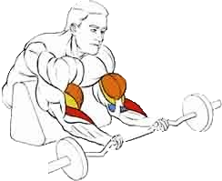

!!!!Cчитается одним из самых эффективных упражнений для наращивания объёма и силы бицепсов.
Исходное положение:
Штангу взять и держать обратным средним хватом.
Плечи должны лежать на опоре.
Техника выполнения:
Поочередно сгибать руки в локтевых суставах, поднимая штангу.
Рекомендации:
Если чувствуется излишнее напряжение в лучезапястных суставах, можно использовать штангу с фигурным грифом.
Как вариант, можно использовать скамью Скотта, чтобы выполнять упражнения на бицепс с гантелями.
Количество повторений: 8-12. Количество подходов: 3.